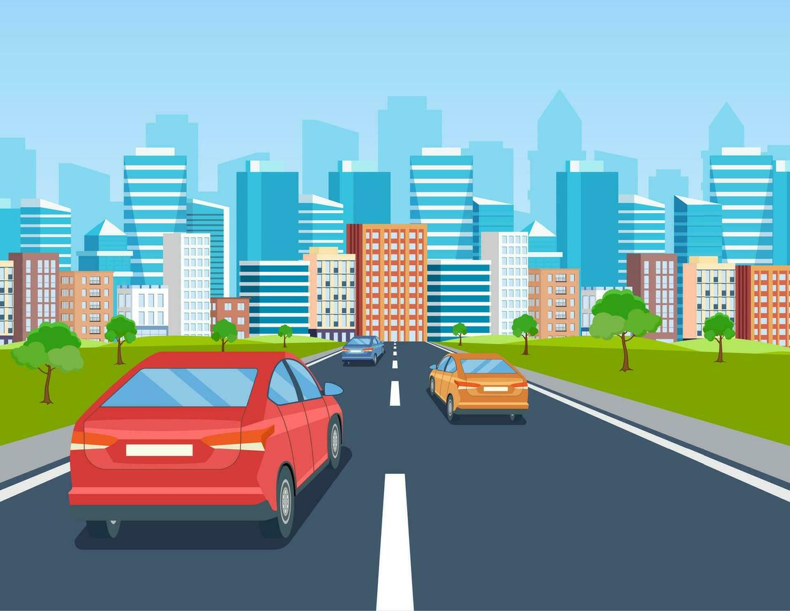

Bienvenido al control de
|
 |
|
Durante el camino al plantel escolar pueden existir diferentes causas que empeoren el tráfico, el tráfico puede hacer que experimentemos diferentes emociones que están sujetas a condiciones externas como lo puede ser el tiempo que falta para entrar a clases, si existen actividades importantes como, exámenes, exposiciones o tareas, etc. Todas estos factores generan emociones a la hora de ir a la escuela como por ejemplo algunas emociones comunes son: |
|
|
No todas las emociones que se experimentan de camino a la escuela son negativas muchas dependen de los factores externos del dia a dia, aun así existen algunas emociones que pueden ser negativas y que podemos experimentar diferentes malestares por experiencias negativas por lo que te mostraremos diferentes estrategias para relajarte y poder llegar a la escuela con la mejor actitud |
Emociones Negativas |